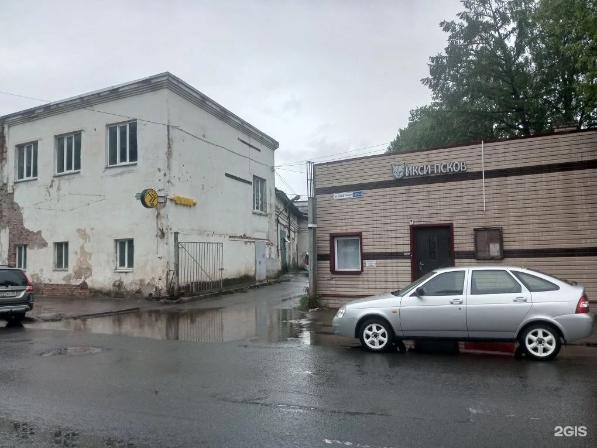
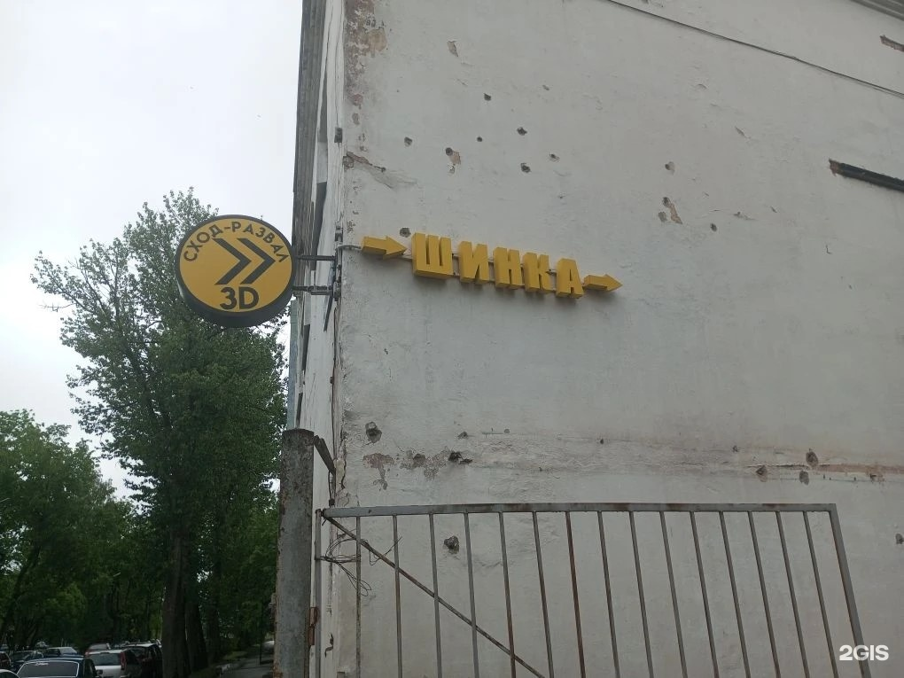
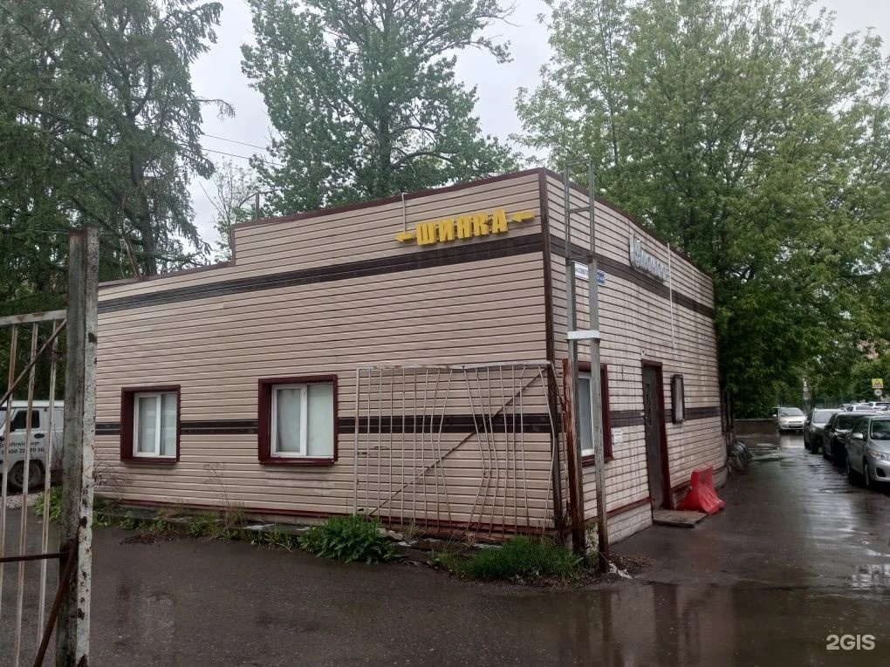
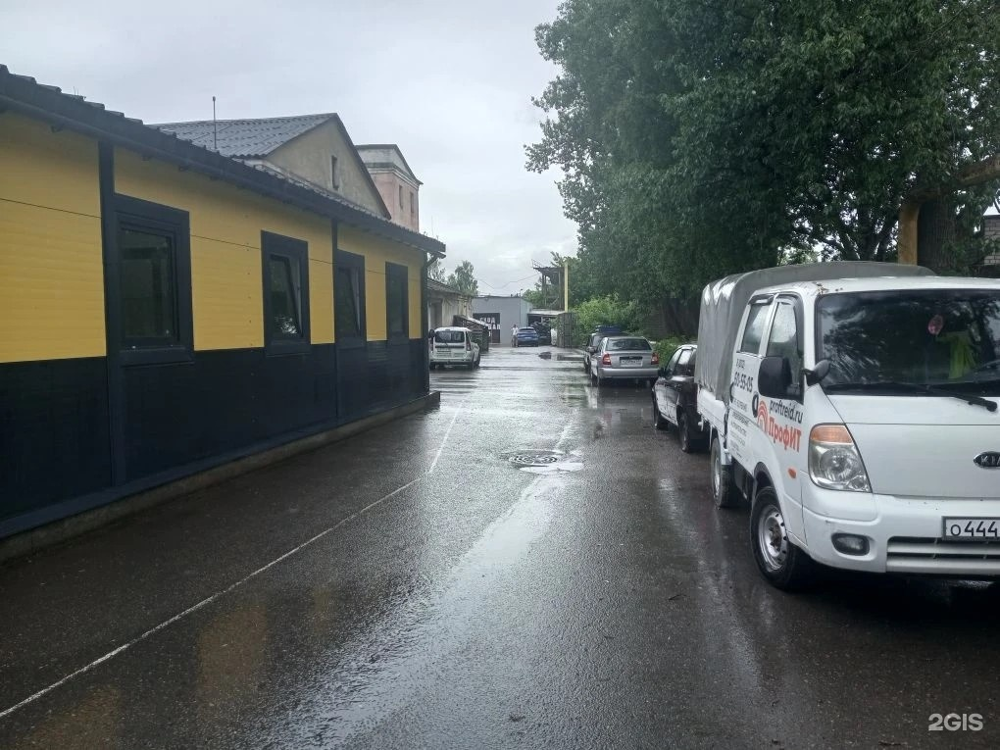

Станция авторемонтаЦентр
АШ сервис
Шиномонтаж, сход-развал и правка дисков
Работы с шинами и дисками, регулировка сход-развала и компьютерная диагностика. Уточните по телефону, какое направление вам нужно.

Часы работы
- Пн–Вс 09:00–20:00
Рейтинг
4.6 из 5 · 54 оценки в 2ГИСДемо-концепт · текущий прайс ещё не подтверждён
Шины, диски и сход-развал
Шиномонтаж
Ремонт порезов и ошиповка — тоже среди доступных работ.
Развал-схождение
Компьютерная диагностика автомобилей
Сварочные работы
Ремонт порезов
Правка / Прокатка дисков
Ошиповка шин
Уточните нужные работы по телефону
ПозвонитьЧто отмечают клиенты
Один посетитель положительно описывает результат регулировки сход-развала после обращения к дилеру.
Клиент рассказывает о помощи с повреждённым колесом перед дальней дорогой.
В одном отзыве хвалят пояснения о том, на что обратить внимание при дальнейшем обслуживании.
Пересказ мнений посетителей без имён авторов. Все отзывы в 2ГИС
Услуги и цены
Сервис и вывески


